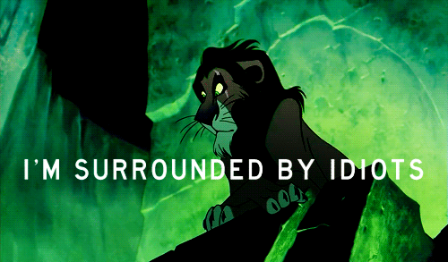
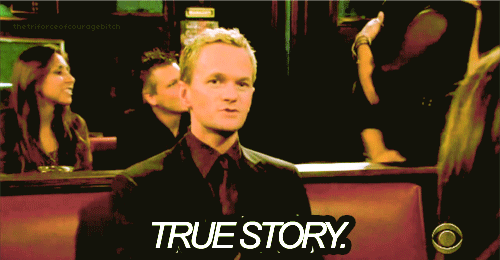

So what?
GOOD QUESTION.
A lot of you are probably thinking something along the lines of, "What's the big deal if I work with my friends on my homework?" or "Why does anyone care if I cheat? It doesn't actually hurt anyone."
If cheating really didn't hurt anyone, we wouldn't have made this module, we wouldn't have an Office of Student Conduct, and we wouldn't have written the Code of Academic Integrity. Obviously, we did all of those things though, and we have five big reasons why:
Because academic dishonesty inhibits learning

You've probably heard this before, and you will definitely hear this again: you learn the most from your failures. Of course, you aren't going to get perfect scores on every assignment, but you should always try The purpose of your college education is for you to try things hands-on and learn from both your successes and your failures. If you copy from another person or from a book or website, you are deliberately choosing to let someone else do your learning for you and to avoid even trying to learn something yourself.
So people can trust your work

Turning in work that is completed through dishonest is just like lying. If you submit dishonest work, you won't have the trust of your teachers or your peers. A reputation for being untruthful will overshadow how smart and how motivated you really are when you go to take the next step in your academic or professional life.
So you stay true to your own expectations

You may not realize it, but you are constantly depending on people to act with integrity. When you read a newspaper, you don't stop to think about whether the journalist is plagiarizing someone else or - even worse - fabricating information. You expect your doctors to have gotten through medical school without cheating. And even right now, you trust that the engineers who built the building you are in knew how to make sure it wouldn't collapse. Make sure that people can place that same trust in you now and during your professional career.
To maintain the integrity of a University of Maryland degree
When you have a degree from the University of Maryland, others will expect you to have earned in one of the best educations possible. They believe you have learned as much about your major as anyone, that you are prepared to apply that knowledge to the real world, and be an innovator, a problem-solver, and a leader. Academic dishonesty makes your degree look meaningless to others - not to mention, other alumni's degrees.
To uphold the standards of the University community

The University of Maryland values and expects ethical action and strong moral character from all community members. Acting with academic integrity is one of the most important ways you can show your Maryland Pride.